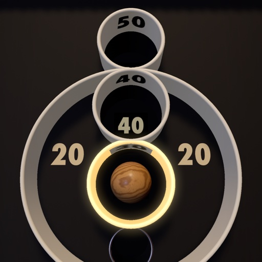
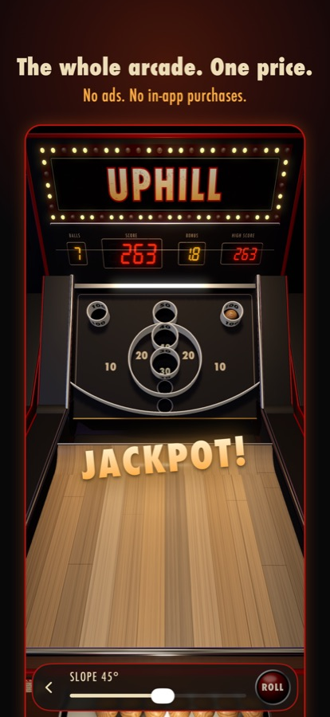
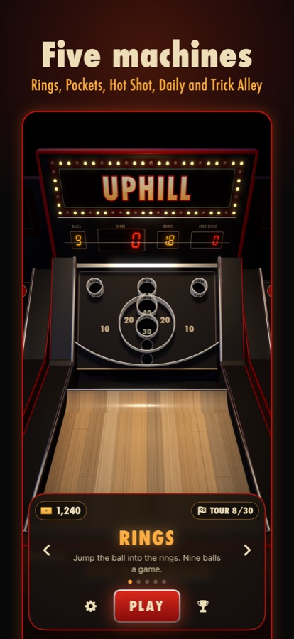
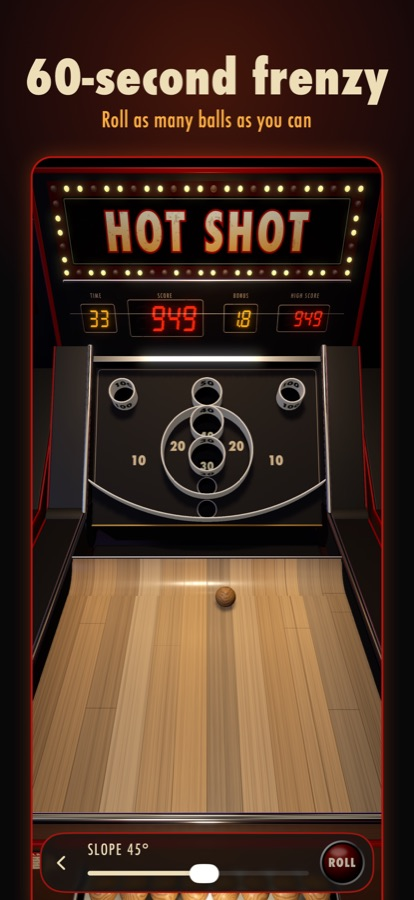
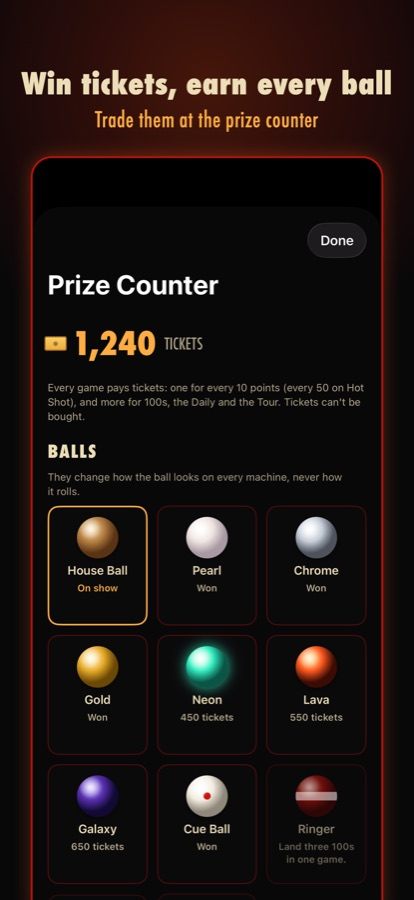
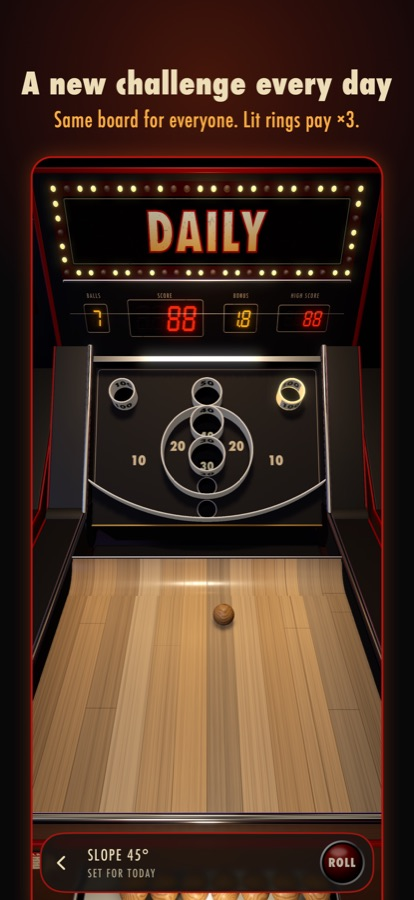
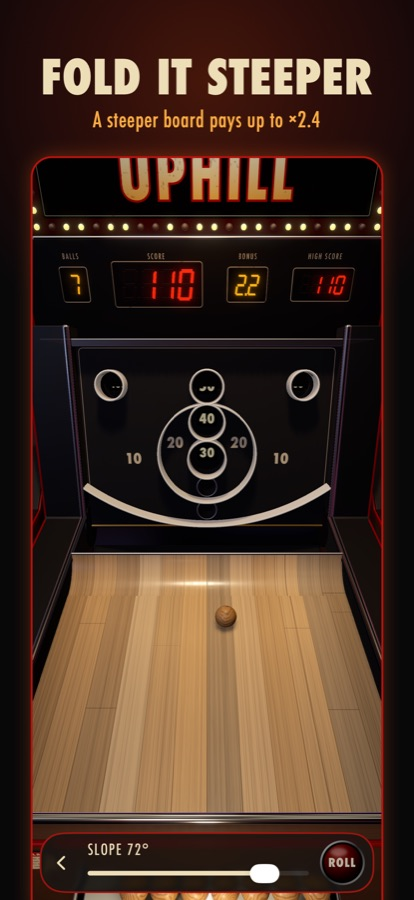

The whole arcade, one price. Uphill is a row of roll-ball machines in real-time 3D: roll the wooden ball up the lane, take the jump and land it in the rings. Five machines, tickets, a prize counter and a new challenge every day. No ads, no in-app purchases, no accounts.
The free try is an App Clip: it opens on iPhone and iPad with nothing to install.






Five machines
- Rings: the ball leaves the end of the lane in the air and comes down among tall rings. 50 at the top, and the 100s hide in the corners.
- Pockets: roll it up the ramp and drop it into the glowing pockets.
- Hot Shot: sixty seconds on the clock. Roll as many balls as you can.
- Daily: the same board for everyone each day, with lit rings that pay triple. One scored try a day, on a leaderboard that starts afresh every day.
- Trick Alley: the rings with trick balls: Super-Bounce Rubber, Heavy Brass and Spin.
Tickets, prizes and the Trick-Shot Tour
Every game feeds out tickets. Trade them at the prize counter for Pearl, Chrome, Gold, Neon, Lava and Galaxy balls, and win the rarest ones with feats. Thirty trick shots, from your first 30 ring to three 100s in one game, each pay more. Tickets are only ever won, never sold.
The hinge is the slope
Fold the board up steeper for a bigger score multiplier, up to ×2.4. On iPhone Duo, stand the phone on a table like a small laptop and the angle of the raised half sets the slope. On iPad and every other iPhone a slider sets it, and on iPad the game plays full screen in any orientation or window size.
Questions
- Is there a ball game made for iPhone Duo?
- Yes: in Uphill the hinge of iPhone Duo is the slope of the board. On every other iPhone and on iPad a slider sets it.
- Does Uphill have ads or in-app purchases?
- No. It's one price on the App Store, with no ads and no in-app purchases. Tickets and prizes are only ever won by playing.
- Can I try it first?
- Yes: roll three balls free in the App Clip, with nothing to install.
- Does it work offline?
- Yes. Game Center leaderboards and achievements update when you're back online.
No tracking. The game sends anonymous play statistics, a report if it crashes, and measures which of its own ads work; one switch in Settings turns all of it off. Game Center scores go to Game Center when you're signed in. See the privacy policy.